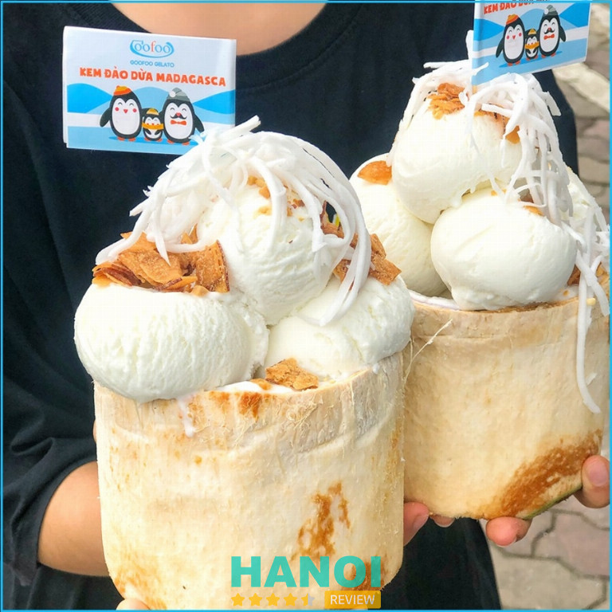
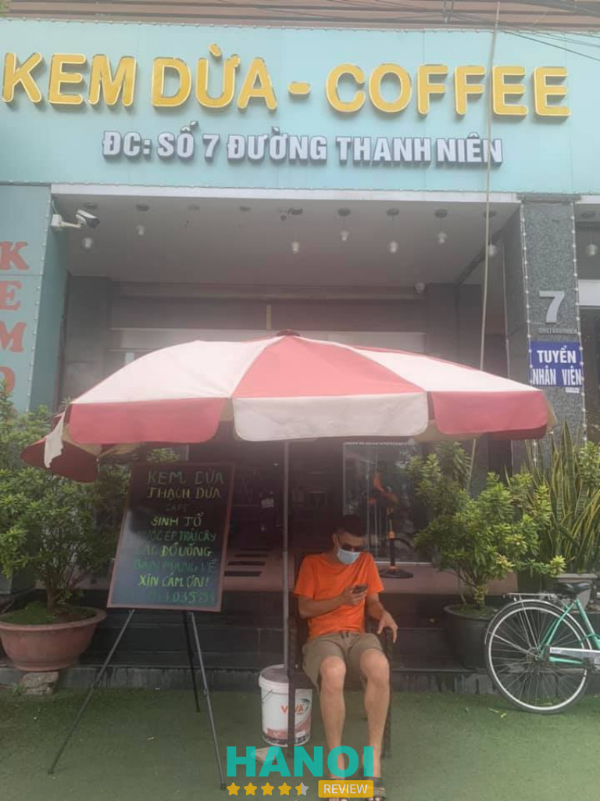
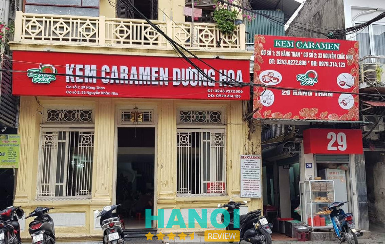
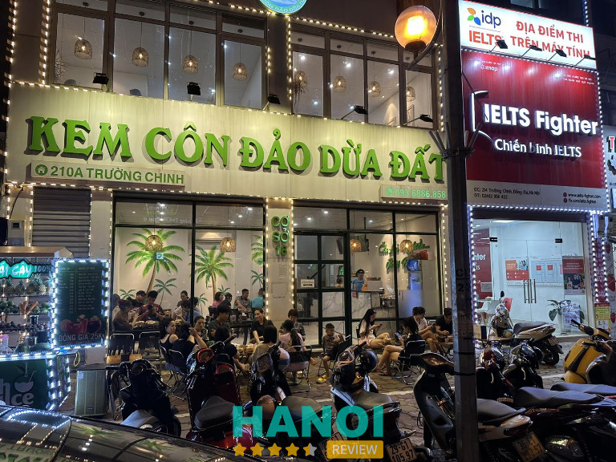
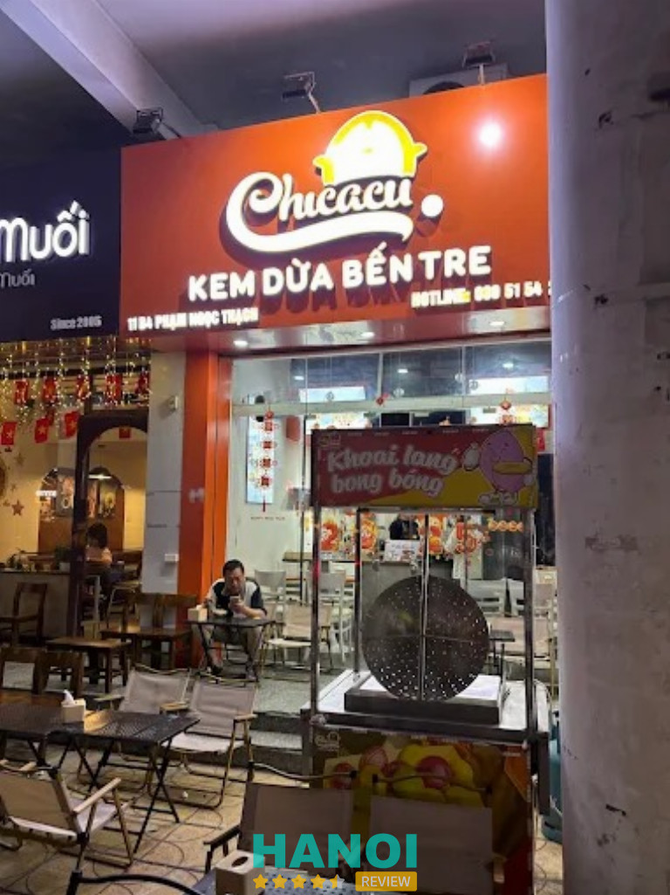
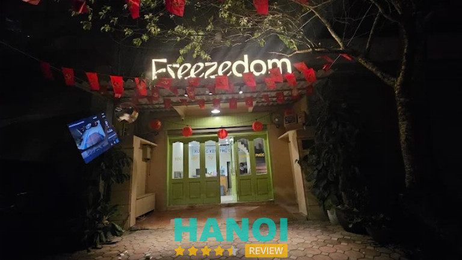

7 Quán kem dừa ở Hà Nội ngon quên lối về cho giới trẻ
Kem dừa từ lâu đã trở thành món giải nhiệt quốc dân được săn đón hàng đầu mỗi khi hè về tại thủ đô. Hương vị thanh mát của kem kết hợp cùng cùi dừa non béo ngậy tạo nên trải nghiệm ẩm thực vô cùng thú vị. Việc tìm kiếm một quán kem dừa ở Hà Nội có không gian đẹp và chất lượng ổn định luôn là ưu tiên của nhiều thực khách. Những địa điểm này không chỉ mang đến món ăn ngon mà còn là nơi thư giãn lý tưởng.
Top 7 Quán kem dừa tại Hà Nội mát lành, dễ tìm, hương vị đặc trưng
Không chỉ đơn thuần là món ăn vặt, quán kem dừa ở Hà Nội mang đến cảm giác thư giãn, giải nhiệt hiệu quả. Hương dừa tự nhiên, cách trình bày bắt mắt và vị kem cân bằng tạo nên sức hút khiến nhiều người tìm hiểu, lựa chọn và trải nghiệm thường xuyên.
Kem Trái Dừa 36 Nguyễn Chí Thanh – Ba Đình
- Giờ mở cửa: 08:30 – 21:30
- Giá: 10.000 – 35.000 đồng
Kem Trái Dừa 36 Nguyễn Chí Thanh là quán kem dừa ở Hà Nội được nhiều người biết đến qua món kem trái dừa mộc mạc, hương vị quen thuộc. Không gian thưởng thức gắn với cảm giác nhẹ nhàng, tập trung vào trải nghiệm ăn kem và cảm nhận vị dừa rõ ràng, dễ nhớ. Tên gọi gắn liền với món kem đặc trưng, tạo dấu ấn riêng trong dòng sản phẩm từ dừa.
Ngoài kem dừa, thạch dừa Đồng Tháp và chè sầu là điểm nhấn nổi bật tại quán, mang đến cảm giác tươi mát, thanh nhẹ khi kết hợp cùng kem trái dừa. Sự hòa quyện giữa kem và thạch tạo nên tổng thể hài hòa, phù hợp với nhiều đối tượng yêu thích món tráng miệng từ dừa. Quán kem dừa ở Hà Nội này được nhắc đến nhiều nhờ sự giản dị trong cách thể hiện món ăn.
Điểm nổi bật tại quán:
- Kem trái dừa phục vụ trực tiếp trong trái dừa
- Thạch dừa có độ giòn, mát
- Hương vị dừa rõ, dễ ăn
- Cách trình bày đơn giản, tập trung vào món chính
- Phù hợp thưởng thức cùng gia đình, bạn bè
Kem Trái Dừa 36 Nguyễn Chí Thanh mang đến trải nghiệm trọn vẹn cho những ai yêu thích quán kem dừa ở Hà Nội với sự kết hợp giữa kem trái dừa và thạch dừa Đồng Tháp. Hương vị nhẹ nhàng, dễ cảm nhận, để lại ấn tượng vừa đủ qua từng lần thưởng thức.
Thông tin liên hệ:
- Địa chỉ: 36 Nguyễn Chí Thanh, Ngọc Khánh, Ba Đình, Hà Nội
- Điện thoại: 0523 223 539
- Email: Ngtrung071@gmail.com
- Facebook: fb.com/100076221223100
Goofoo Gelato – Đống Đa
- Giờ mở cửa: 9:00 – 23:00
- Giá: 35.000 – 60.000 đồng
Goofoo Gelato là thương hiệu nổi tiếng chuyên cung cấp các dòng kem ý và kem đảo dừa với phong cách chế biến sáng tạo tại thủ đô. Thực khách khi ghé thăm quán kem dừa ở Hà Nội này sẽ ấn tượng bởi sự kết hợp tinh túy giữa hoa quả tươi Việt Nam và quy trình sản xuất hiện đại.

Món kem dừa tại đây được trình bày cầu kỳ trong trái dừa xiêm nhỏ nhắn, giữ nguyên được hương vị thanh khiết và độ béo ngậy tự nhiên. Lớp kem dẻo mịn tan chảy ngay đầu lưỡi mang đến cảm giác sảng khoái, đặc biệt phù hợp để giải nhiệt trong những ngày thời tiết oi bức.
Đặc điểm nổi bật của món ăn:
- Cốt kem được làm từ nước cốt dừa nguyên chất, không sử dụng hương liệu nhân tạo hay chất bảo quản hóa học.
- Trái dừa dùng để đựng kem luôn là dừa xiêm tươi, có phần cùi non mềm, dễ dàng nạo kèm cùng kem.
- Phần topping đi kèm phong phú bao gồm dừa khô giòn rụm, lạc rang thơm bùi và các loại sốt trái cây tự nhiên.
- Kem có độ ngọt vừa phải, phù hợp với khẩu vị của nhiều lứa tuổi từ trẻ em đến người lớn.
- Thực đơn đa dạng với nhiều biến tấu khác nhau từ kem dừa truyền thống đến kem dừa kết hợp trân châu.
Lựa chọn quán kem dừa ở Hà Nội như Goofoo Gelato giúp nâng tầm trải nghiệm ẩm thực đường phố nhờ sự chỉn chu trong từng khâu chế biến. Những viên kem mát lạnh cùng không gian thưởng thức gần gũi tạo nên điểm hẹn lý tưởng cho các cuộc gặp gỡ thân mật.
Thông tin liên hệ:
- Địa chỉ: Số 219 Xã Đàn, Đống Đa, Hà Nội
- Điện thoại: 0356 036 037
- Facebook: fb.com/goofoogelato219XaDan
Bảo Oanh Cafe – Kem Dừa – Ba Đình
- Giờ mở cửa: 8:00 – 23:30
- Giá: 70.000 – 165.000 đồng
Nằm ngay cạnh hồ Trúc Bạch thơ mộng, Bảo Oanh Cafe là điểm đến quen thuộc của những người yêu thích món kem dừa tại Hà Nội. Quán sở hữu không gian thoáng đãng với tầm nhìn hướng thẳng ra mặt nước, mang lại cảm giác thư thái cho khách hàng khi thưởng thức quà vặt giữa lòng phố cổ.

Thực đơn tại đây tập trung vào sự kết hợp hài hòa giữa hương vị truyền thống và cách bài trí hiện đại. Món ăn được trình bày đẹp mắt, giữ trọn vẹn nét đặc trưng của ẩm thực Thủ đô, thu hút cả khách địa phương lẫn khách du lịch ghé thăm.
- Kem dừa nguyên trái: Phần kem được đặt trong quả dừa xiêm tươi, có độ ngọt thanh, béo ngậy và đi kèm cùi dừa non mềm cực kỳ bắt vị.
- Topping phong phú: Mỗi trái kem được trang trí thêm dừa khô giòn rụm, lạc rang thơm bùi, sơ ri muối và đôi khi là một chiếc ô giấy nhỏ xinh xắn.
- Hương vị tự nhiên: Kem có kết cấu mịn màng, không bị dăm đá, giữ được mùi thơm đặc trưng của cốt dừa tươi nguyên chất.
- Đồ uống đa dạng: Ngoài kem dừa, thực đơn còn có các loại cà phê, nước ép trái cây và trà để đáp ứng sở thích đa dạng của mọi đối tượng.
Bảo Oanh Cafe duy trì sức hút nhờ vào chất lượng món ăn ổn định và phong cách phục vụ tận tình. Đây là lựa chọn lý tưởng để thư giãn, trò chuyện cùng người thân và tận hưởng không khí yên bình bên bờ hồ Trúc Bạch vào những buổi chiều lộng gió.
Thông tin liên hệ:
- Địa chỉ: Số 7 Thanh Niên, Ba Đình, Hà Nội
- Điện thoại: 0911 199 666
- Email: contact@baooanh.com
- Facebook: fb.com/cafebaooanh
Caramen Dương Hoa – Ba Đình
- Giờ mở cửa: 8:00 – 23:00
- Giá: 40.000 – 70.000 đồng
Hà Nội sở hữu nhiều thức quà giải nhiệt, nhưng Caramen Dương Hoa tại phố Hàng Than vẫn duy trì sức hút riêng biệt suốt hàng chục năm qua. Tiệm nổi tiếng với công thức chế biến thủ công, giữ trọn hương vị truyền thống của dòng kem và caramen đặc trưng đất Kinh Kỳ.

Món kem dừa tại đây gây ấn tượng bởi sự tỉ mỉ trong cách trình bày và kết hợp nguyên liệu. Mỗi phần kem phục vụ khách hàng đều mang đậm phong vị tự nhiên, không quá phô trương nhưng đủ sức giữ chân những thực khách sành ăn nhất.
- Kem dừa nguyên quả: Phần kem mịn mượt được đặt bên trong quả dừa xiêm tươi, kèm theo dừa nạo sợi, lạc rang và sơ ri trang trí.
- Caramen truyền thống: Cốt bánh mềm mại, béo ngậy, đượm mùi trứng sữa và thơm nồng vị đường cháy đặc trưng.
- Caramen cốt dừa: Sự kết hợp giữa caramen cổ điển và nước cốt dừa sánh mịn, tạo nên độ ngậy rất riêng.
- Thạch dừa: Miếng thạch thanh mát, trong veo, có vị ngọt dịu từ nước dừa nguyên chất.
- Kem trái bơ: Lớp kem bơ dẻo quyện cùng viên kem dừa trắng muốt bên trên, tạo nên sự giao thoa về hương vị và màu sắc.
Sự hòa quyện giữa độ lạnh sâu của kem và vị béo của dừa tạo nên trải nghiệm ẩm thực thú vị giữa lòng phố cổ. Caramen Dương Hoa vẫn là điểm dừng chân quen thuộc cho những ai muốn tìm lại hương vị kem dừa và caramen đúng điệu tại Hà Nội.
Thông tin liên hệ:
- Địa chỉ: 29 Hàng Than, Trúc Bạch, Ba Đình, Hà Nội
- Điện thoại: 0979 314 123
- Facebook: fb.com/Caramen29hangthan
Kem Côn Đảo Dừa Đất – Thanh Xuân
- Giờ mở cửa: 8:00 – 22:30
Kem Côn Đảo Dừa Đất là quán kem dừa mang phong vị miền biển, gợi nhớ hương vị Côn Đảo mộc mạc giữa không gian Hà Nội. Tên gọi tạo cảm giác gần gũi, nhấn mạnh yếu tố dừa đất tự nhiên, phù hợp với xu hướng tìm kiếm món tráng miệng thanh mát, ít ngọt gắt, dễ thưởng thức trong nhiều thời điểm trong ngày.

Không gian quán hướng đến sự giản dị, tập trung vào trải nghiệm kem dừa nguyên bản. Món kem dừa được phục vụ trong trái dừa, giữ trọn mùi thơm béo nhẹ, kết hợp cùng các thành phần quen thuộc, tạo cảm giác hài hòa. Kem Côn Đảo Dừa Đất phù hợp cho những buổi gặp gỡ nhẹ nhàng, thưởng thức món ngọt mát lạnh sau bữa ăn.
Điểm nổi bật tại Kem Côn Đảo Dừa Đất:
- Kem dừa phục vụ trong trái dừa, hương vị đặc trưng.
- Nguyên liệu dừa chọn lọc, chú trọng độ tươi.
- Kết cấu kem mịn, vị ngọt dịu, dễ ăn.
- Phù hợp dùng tại chỗ hoặc mua mang đi.
- Phong cách phục vụ gọn gàng, tập trung vào sản phẩm.
Kem Côn Đảo Dừa Đất mang đến lựa chọn kem dừa giản đơn nhưng có điểm nhấn riêng, phù hợp với người yêu thích hương vị truyền thống. Quán tạo dấu ấn bằng sự nhất quán trong cách làm kem dừa, giữ trọn tinh thần mộc mạc, giúp thực khách dễ dàng ghi nhớ và quay lại để tiếp tục thưởng thức món kem quen thuộc giữa nhịp sống Hà Nội.
Thông tin liên hệ:
- Địa chỉ: 210A Trường Chinh, Thanh Xuân, Hà Nội
- Điện thoại: 0936 886 858
- Facebook: fb.com/100064043082679
Chicacu – Kem Dừa Bến Tre – Đống Đa
Tìm kiếm một quán kem dừa ở Hà Nội mang đúng tinh thần đặc sản miền Tây không hề khó khi dừng chân tại Chicacu. Từng phần kem được chăm chút tỉ mỉ để giữ trọn vẹn sự thanh mát và béo ngậy tự nhiên từ dừa Bến Tre.
Chicacu ưu tiên mang đến mức giá luôn tốt với mong muốn được gặp gỡ và phục vụ khách hàng mỗi ngày. Sự mộc mạc trong hương vị và sự gần gũi trong cách phục vụ tạo nên một không gian thưởng thức ẩm thực nhẹ nhàng, thân thuộc.

Dưới đây là những điểm đặc trưng khiến thực khách yêu thích:
- Hương vị kem dừa: Kem dừa Bến Tre tại đây mang vị ngọt thanh, độ béo vừa phải và kết cấu mịn màng, chuẩn vị truyền thống.
- Nguyên liệu tự nhiên: Thành phần chính từ dừa tươi chọn lọc, kết hợp cùng các loại topping đi kèm giúp tăng thêm sự đa dạng cho món ăn.
- Chính sách giá: Mức giá hợp lý, phù hợp với nhiều đối tượng khách hàng từ học sinh, sinh viên đến người đi làm.
- Thông điệp phục vụ: Tinh thần hiếu khách, luôn trân trọng từng lượt ghé thăm của thực khách để duy trì sự kết nối hàng ngày.
Ghé Chicacu để tận hưởng những ly kem dừa mát lạnh là cách tuyệt vời để thư giãn và cảm nhận hương vị quê hương ngay giữa lòng thủ đô. Những phần kem ngọt lành luôn sẵn sàng để làm hài lòng mọi thực khách yêu mến món đặc sản Bến Tre này.
Thông tin liên hệ:
- Địa chỉ: 11B4 Phạm Ngọc Thạch, Kim Liên, Đống Đa, Hà Nội
- Điện thoại: 0345 934 800
- Facebook: fb.com/Chicacu.kemduaBenTre
Freezedom – Ba Đình
Freezedom Hà Nội là điểm đến lý tưởng cho những ai đang tìm kiếm hương vị nguyên bản từ xưởng kem dừa thủ công tự do. Tại đây, những mẻ kem dừa được sản xuất tỉ mỉ, chắt lọc từ nguồn nguyên liệu tự nhiên để giữ trọn vẹn độ ngậy béo và hương thơm thanh mát đặc trưng.

Sự kết hợp giữa kỹ thuật làm kem truyền thống và tinh thần tự do giúp Freezedom trở thành quán kem dừa thủ công ở Hà Nội có sức hút riêng biệt. Mỗi phần kem phục vụ thực khách đều mang theo sự tươi mới, mềm mịn, không lẫn với các loại kem công nghiệp đại trà.
Các đặc trưng nổi bật của kem dừa tại hệ thống:
- Chất lượng thủ công: Kem dừa được chế biến trực tiếp tại xưởng, không sử dụng hương liệu nhân tạo, giữ màu trắng sứ và mùi thơm tự nhiên của cốt dừa.
- Kết cấu sản phẩm: Độ dẻo mịn cao, tan chậm trên đầu lưỡi, mang lại cảm giác mát lạnh sảng khoái.
- Phân phối rộng khắp: Hương vị kem dừa đặc trưng này hiện diện đồng nhất tại cả 3 cơ sở Hà Nội, Đà Nẵng và Hội An.
- Nguyên liệu tuyển chọn: Sử dụng những quả dừa tươi đạt tiêu chuẩn về độ già và cơm dừa dày để tối ưu hóa vị béo ngậy tự nhiên.
Sự hiện diện của Freezedom Hà Nội góp phần định nghĩa lại trải nghiệm thưởng thức kem dừa thủ công giữa lòng phố thị. Với sự tỉ mỉ trong từng khâu chế biến, xưởng mang đến một lựa chọn ẩm thực thanh lành, đậm chất tự nhiên cho người dân thủ đô và du khách tại Đà Nẵng, Hội An.
Thông tin liên hệ:
- Địa chỉ: 29B Ngõ 100 Đội Cấn, Ba Đình, Hà Nội
- Điện thoại: 0325 252 857
- Facebook: fb.com/Freezedom.HaNoi
Tiêu chí chọn quán kem dừa ở Hà Nội chuẩn gu
Để chọn được địa điểm thưởng thức kem ưng ý nhất giữa lòng thủ đô, bạn cần dựa trên những tiêu chuẩn đánh giá khắt khe về chất lượng phục vụ.
- Chất lượng kem: Kem phải có độ dẻo mịn tự nhiên, không bị dăm đá và giữ được mùi thơm đặc trưng của cốt dừa tươi nguyên chất.
- Độ tươi cùi dừa: Phần cùi dừa đi kèm phải là dừa non, mềm và có vị ngọt thanh để hòa quyện hoàn hảo với lớp kem mát lạnh.
- Topping đa dạng: Các món ăn kèm như lạc rang, dừa khô, sơ ri hay sốt socola cần được chuẩn bị chỉn chu để gia tăng hương vị.
- Không gian quán: Ưu tiên những địa điểm sạch sẽ, thoáng mát hoặc có view phố xá đẹp để thực khách thoải mái check-in và thư giãn tận hưởng.
- Vệ sinh thực phẩm: Quy trình chế biến và bảo quản nguyên liệu phải đảm bảo các tiêu chuẩn an toàn giúp thực khách hoàn toàn yên tâm khi ăn.
- Giá cả hợp lý: Mức giá cần tương xứng với định lượng và chất lượng món ăn, phù hợp với túi tiền của đối tượng học sinh, sinh viên.
- Thái độ phục vụ: Nhân viên nhiệt tình, nhanh nhẹn và luôn chú trọng đến trải nghiệm của khách hàng là điểm cộng lớn cho bất kỳ cơ sở nào.
Việc ghé thăm một quán kem dừa ở Hà Nội chất lượng chắc chắn sẽ giúp bạn xua tan cái nắng nóng gay gắt và nạp lại năng lượng tích cực. Hãy dành thời gian trải nghiệm những hương vị tinh tế để tìm ra chân ái cho khẩu vị của riêng mình. Hy vọng bạn sẽ có những giây phút thư giãn tuyệt vời và ngon miệng nhất. Đừng quên liên hệ ngay để đặt chỗ trước vào những ngày cuối tuần đông đúc.
Có thể bạn quan tâm
- 10 Quán nộm ngon ở Hà Nội hấp dẫn vị giác, giá cả hợp lý
- 10 Quán cafe game ở Hà Nội cực chất, không gian độc đáo
- 11 Quán ăn vặt ở Hà Nội phải thử ngay, ngon khó cưỡng
- 5 Quán chè sầu tại Hà Nội thơm ngon nức tiếng, rất đông khách
DOANH NGHIỆP: Đăng tải thông tin MIỄN PHÍ.
Tin đọc nhiều


10 Quán phở gà tại Hà Nội ngon nức tiếng, khách đông nườm nượp
Phở gà từ lâu là món gây thương nhớ trong lòng biết bao người Hà Nội. Để tìm một quán phở gà tại Hà Nội...

5 Quán chè sầu tại Hà Nội thơm ngon nức tiếng, rất đông khách
Những quán chè sầu tại Hà Nội luôn thu hút đông đảo các thực khách tìm đến để thưởng thức. Bởi đây là một trong...

7 Quán lẩu cua đồng tại Hà Nội ngon nức tiếng, nên thử một lần
Lẩu cua đồng là một món ăn truyền thống của người Việt, nổi tiếng với hương vị đậm đà và dinh dưỡng phong phú. Nếu...
10 Nhà hàng tại Hà Nội ngon nổi tiếng, dịch vụ tốt nhất
Những nhà hàng tại Hà Nội không chỉ thu hút các khách du lịch quốc tế mà còn được nhiều người dân địa phương thường...

Trở thành người đầu tiên bình luận cho bài viết này!